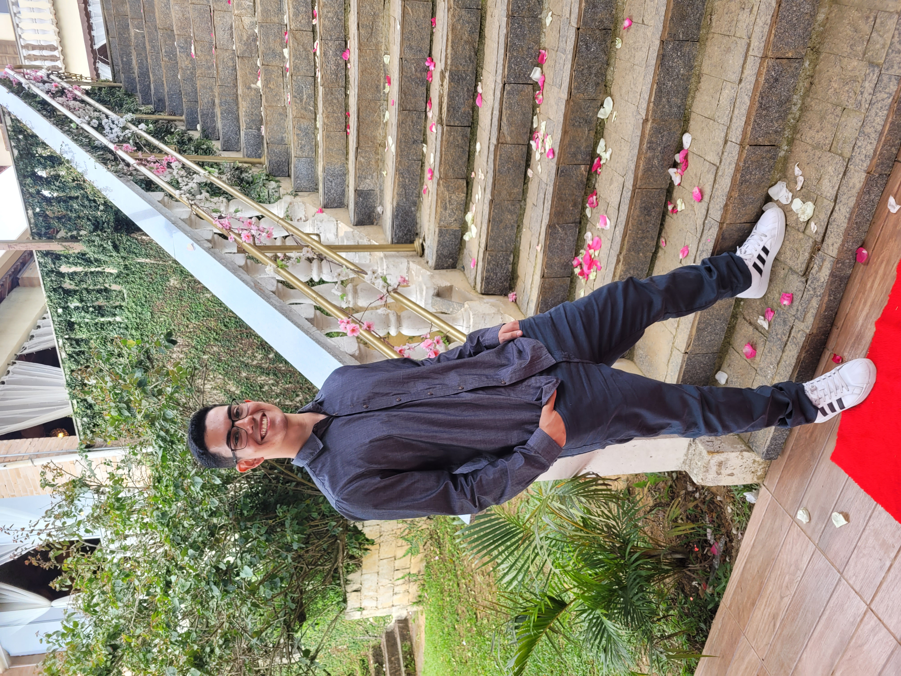

Ronald Amorim Garcia
Programador Java
"Take one thing at a time"
Sou programador backend com mais de 4 meses de experiência em criação de serviços visando transações bancárias, utilizando tecnologias variadas como Jakarta EE (JMS, EJB, JPA), Spring MVC, Oracle DB, MariaDB, WebSphere, MQ e Gitlab/Git. Apaixonado por novos desafios e soluções de problemas, participei da manutenção de aplicações escaláveis que são acionadas mais de um milhão de vezes ao dia.